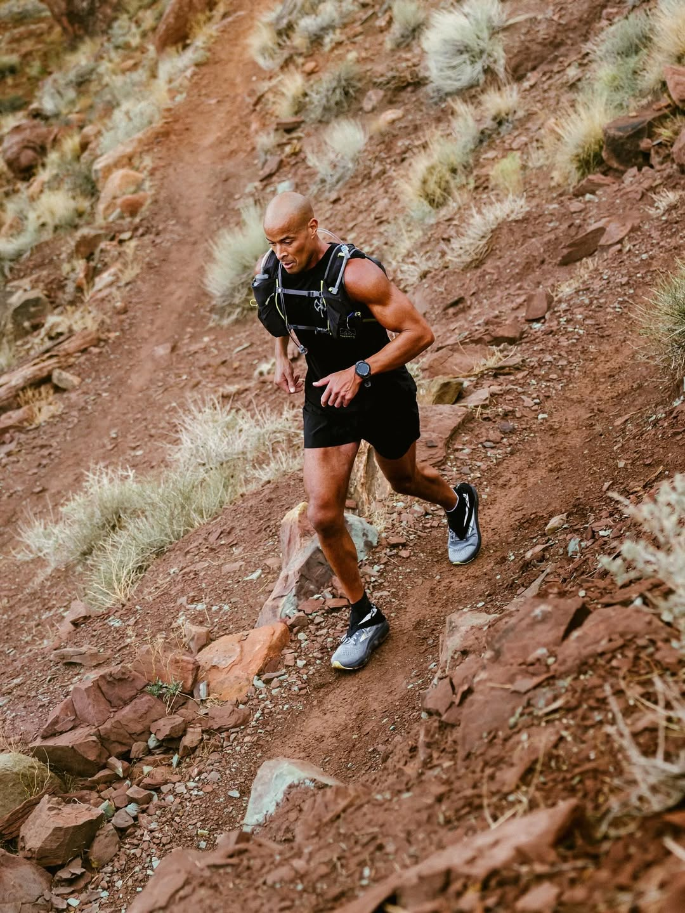
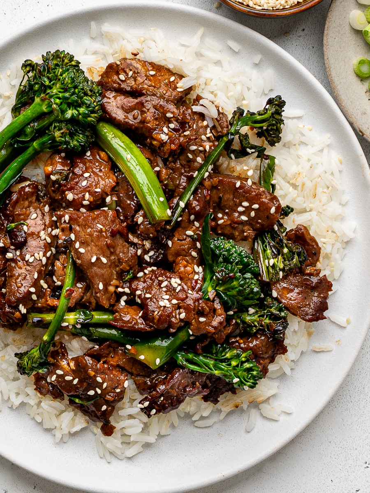
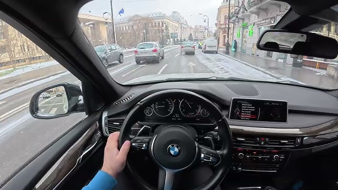
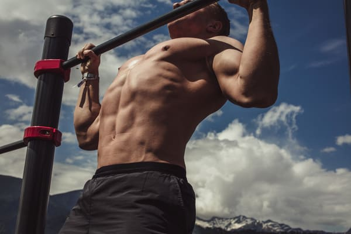

Who Am I?
My name is Lan Le Dang, and I am a senior computer science student at Georgia State University. I have a strong passion for technology and web development, which began at a young age when I became fascinated with how websites and applications are built. This portfolio reflects my growth and progress as I continue to deepen my understanding of web development fundamentals.
I enjoy problem-solving and creating projects that are both functional and meaningful. Learning HTML and CSS has given me a solid foundation for understanding how websites are built from the ground up. Starting from scratch and turning ideas into reality is a skill I value and continue to refine.
My goal is to continue improving my skills and eventually create professional-quality websites that are robust, responsive, and visually appealing. I aim to build projects that not only showcase my technical abilities but also highlight my creativity and dedication to delivering impactful solutions.
Outside of my academic and professional pursuits, I enjoy playing video games, going for drives, working out at the gym, running, trying new foods, and watching shows. These hobbies help me stay balanced and inspired. I also value spending quality time with friends and family, as they are a constant source of motivation and support.
   